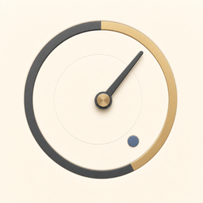
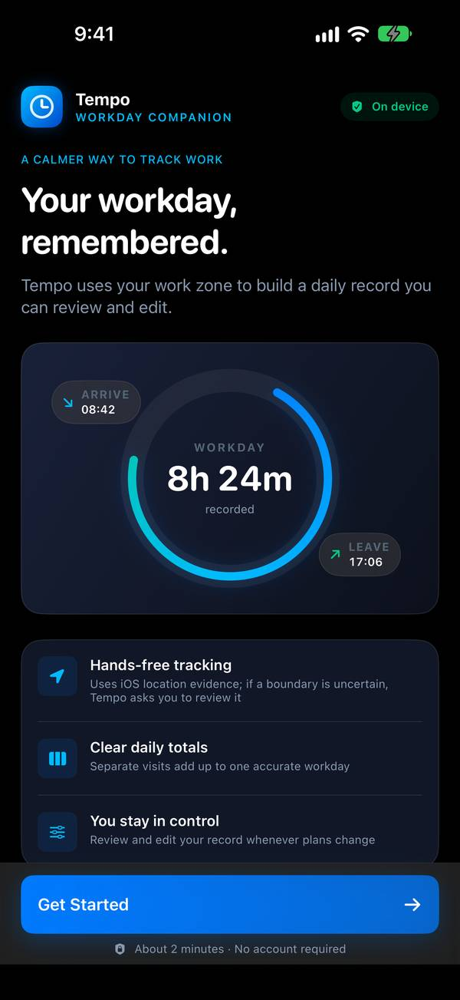
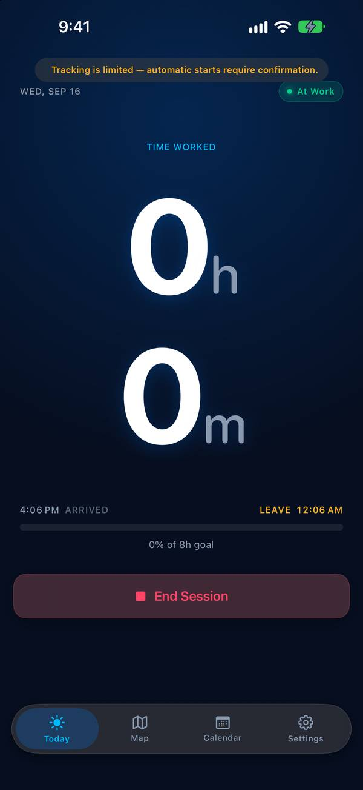
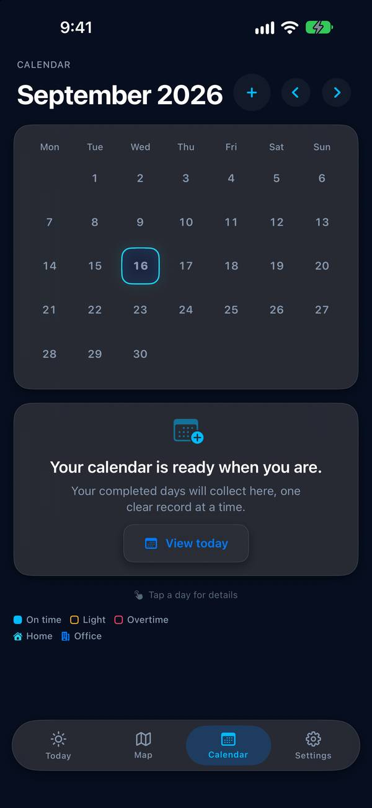

Seize Apps · iOS
Tempo
Tu jornada se mide por lo que sacas adelante, no por las horas que vigilas. Tempo se da cuenta de cuándo llegas al trabajo y cuándo te vas, lo suma en un día honesto y te deja revisar, partir o corregir cualquier tramo. Modo manual desde el primer día; seguimiento automático solo si decides dibujar una zona de trabajo.



Qué hace
Una sola cosa, bien hecha.
Horas sin tocar nada
Dibuja una zona de trabajo una vez y Tempo hace el resto con la ubicación que iOS ya guarda. Varias visitas suman una jornada exacta.
Hoy, claro
Tiempo trabajado, tu objetivo diario, llegada y salida en una pantalla, y una vista mensual que enseña de un vistazo los días en hora, cortos y con horas de más.
Tu registro, editable
Revisa, corrige, parte, fusiona o exporta. Si un límite no estaba claro, Tempo pregunta en vez de adivinar.
Privacidad
Tuyo, no nuestro.
Tempo guarda tus sesiones, zonas y objetivos en tu dispositivo. La ubicación se usa solo para detectar la zona de trabajo que dibujaste, en el propio teléfono, y nunca se envía a ningún sitio. Sin cuenta, sin analítica.
Una app de Seize Apps.